In 1910, one report funded by one family shut down half the medical schools in America. By 1967, the sugar industry had paid Harvard to blame fat for heart disease. By 1996, a single painkiller would kill 600,000 people and generate $35 billion. The war for your body was never a fair fight — because you didn’t know it was happening.
The United States spends more on healthcare than any nation on Earth.
Annual U.S. healthcare spending:
$4,300,000,000,000
More than the GDP of Germany. More than the military budgets of every country on Earth combined. The most expensive healthcare system ever built.
And the people inside it are the sickest in the developed world.
If the system is designed to make us healthy… why are we so sick?
This scroll answers that question. Not with speculation. With receipts.
Congressional records. Court settlements. Litigation discovery. The industry’s own internal memos. The federal government’s own reports.
The war for your body is the most documented war in this series.
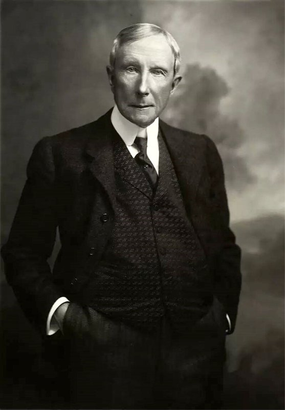
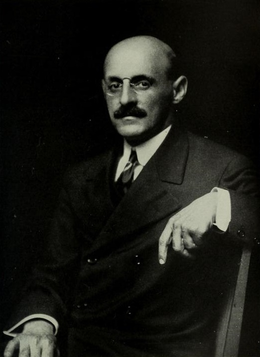
Most people know John D. Rockefeller as the oil monopolist. Standard Oil. The richest man in history. What they don’t know is what he did after the breakup.
He didn’t lose power. He redirected it.
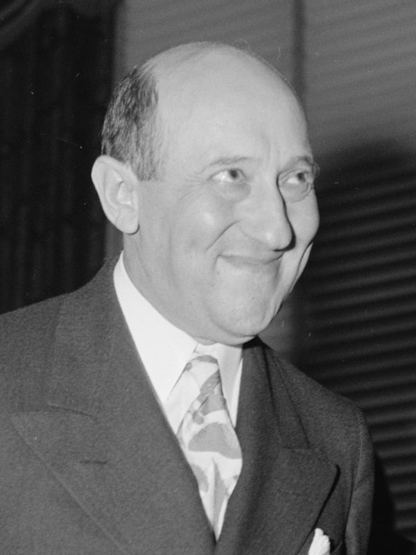
Morris Fishbein edited the Journal of the American Medical Association for 26 years (1924–1950). He never practiced medicine after his internship. He admitted under oath that he failed anatomy. He ran the AMA’s Bureau of Investigation, which targeted any practitioner using non-pharmaceutical approaches. He carried tobacco ads in JAMA for two decades. He was the most powerful figure in American medicine, and he used that power as a weapon.
Five practitioners. Five documented destructions.
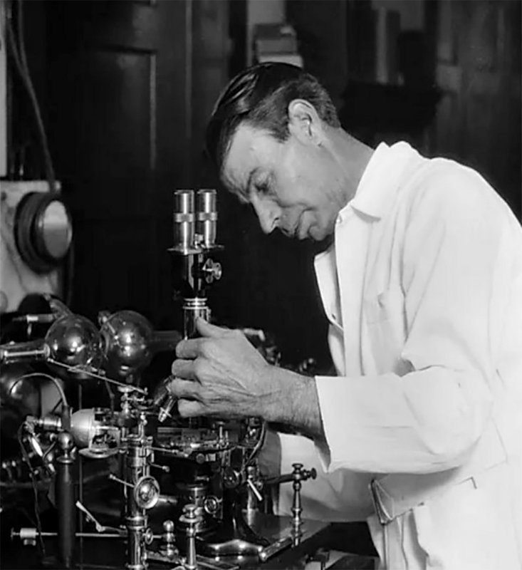
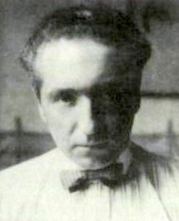
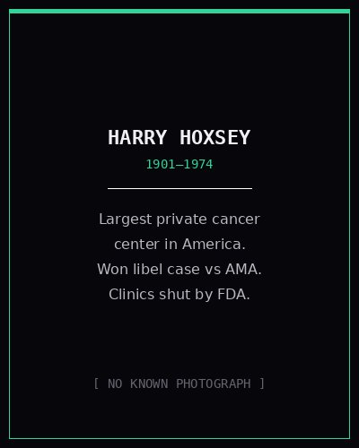
This was the architecture. A private organization, funded by one family, used one report to reshape an entire profession. Alternatives were eliminated. Practitioners were destroyed. The institution itself took tobacco money for decades. And the pharmaceutical model — the only model left standing — was built on a petrochemical foundation.
Standard Oil’s cartel agreement with IG Farben — the company that made Zyklon B — is documented in the Kilgore Committee hearings and the Nuremberg trial records. IG Farben’s successor companies — Bayer, BASF, Hoechst/Sanofi — became the modern pharmaceutical industry.
The architecture built the walls. Now: what they put inside them.
Two parallel tracks — food and pharma — running through the same revolving door.
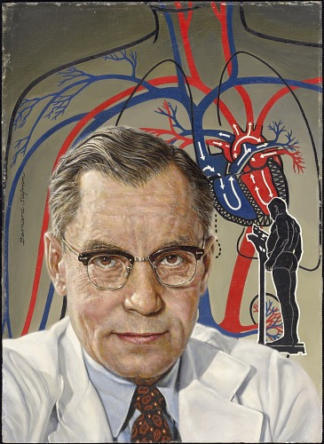
Luise Light, the USDA’s Director of Dietary Guidance, designed the original food pyramid. Her version recommended 3–4 servings of whole grains. The USDA’s political leadership overrode her, tripling it to 6–11 servings of bread, cereal, rice, and pasta — without specifying “whole” grain. The meat and dairy recommendations were also increased. Light later said: “I vehemently protested that the changes, if followed, could lead to an epidemic of obesity and diabetes — and I was right.”
The same USDA that sets your dietary guidelines is legally mandated to promote American agriculture. The agency telling you what to eat is the agency selling what farms produce.
D. Mark Hegsted — the Harvard scientist paid by the Sugar Research Foundation — became the USDA’s chief nutritionist, where he helped draft the 1977 Dietary Goals that enshrined the low-fat orthodoxy his industry funders had paid him to establish.
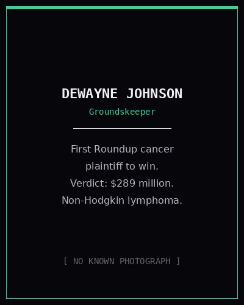
Roundup Ready seeds now cover 94% of U.S. soybeans and 89% of U.S. corn. Seed costs have risen 325%. Glyphosate use increased 16-fold. Bayer acquired Monsanto for $63 billion — then lost billions more in court. Total litigation provisions: $16 billion.
Bayer retired the Monsanto name immediately. The brand was too toxic. The product is still on shelves.
Crisco was introduced in 1911 by Procter & Gamble — converting industrial cottonseed oil into “food.” Trans fats from hydrogenated oils would cause an estimated 30,000–100,000 premature cardiac deaths per year at peak consumption. The FDA didn’t ban them until 2018 — 107 years later.
Ultra-processed food now accounts for 57% of American calories. A 2024 BMJ umbrella review found “convincing evidence” that UPF consumption is associated with 50% higher cardiovascular death risk, 12% higher diabetes risk, and 48–53% higher depression risk.
The global ultra-processed food market is worth $3 trillion.
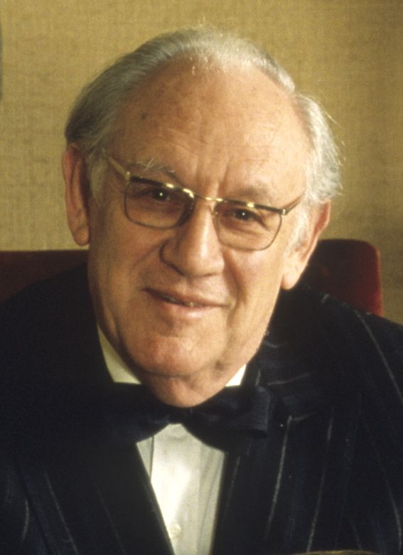
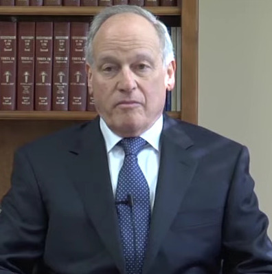
Everything documented so far — the captured schools, the bought science, the revolving door — created the conditions. This act shows the body count.
FDA reviewer Curtis Wright → Purdue Pharma ($400K/yr) → “less than 1% addiction” → half a million graves.
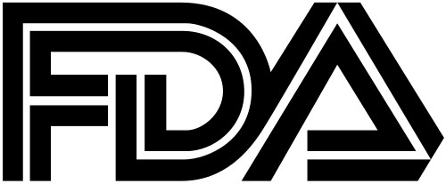
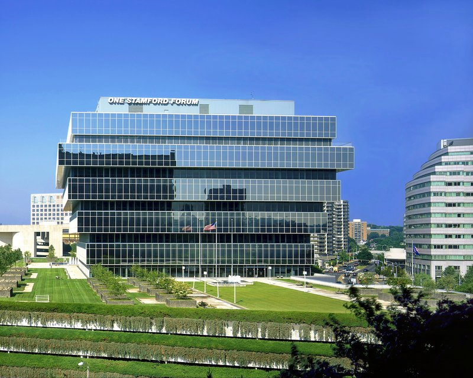
The marketing blitz: 1,000 sales reps. 34,000 branded promotional items — fishing hats, plush toys, music CDs. 5,000 physicians flown to resort conferences. Free starter coupons for patients. OxyContin sales rose from $48 million (1996) to $1.1 billion (2000). A 2,000% increase.
600,000 dead. That exceeds American combat deaths in World War I, World War II, Korea, and Vietnam combined.
The accountability: $6 billion from a family that withdrew $10.4 billion. No prison time for any Sackler. That’s roughly $10,000 per death.
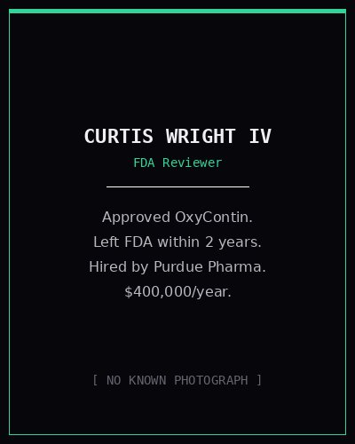
The system didn’t fail. It performed exactly as designed. The product was never health. The product was dependency.
Pull back. See the whole system at once.
Petroleum monopoly → philanthropic control → pharmaceutical paradigm → petrochemical agriculture → captured nutrition science.
The pharmaceutical industry spends more on lobbying than any other industry in the United States. They fund the FDA. They fund the clinical trials. They fund the doctors. They fund the TV ads. They fund the medical education. And the largest fraud settlements in American history — $3 billion, $2.3 billion, $2.2 billion — are treated as the cost of doing business. No major pharmaceutical company has ever been excluded from federal healthcare programs, despite repeat criminal convictions.
Chemical weapons conglomerate → war crimes tribunal → pharmaceutical giant → $63B acquisition → your grocery store.
They didn’t just control your energy, your money, your mind, and your information. They controlled your body.
The wall held for a century. It is cracking now.
FDA additive reviews are underway. Red Dye No. 3 banned. Brominated vegetable oil revoked. GRAS substances under new scrutiny — 66 years after the loophole was created. School lunch programs are being overhauled. Dietary guidelines are being revised with stated goals of reducing industry influence. Multiple states have introduced legislation on food additives, fluoride, and pharmaceutical transparency.
Whether these reforms survive the lobbying apparatus documented in this scroll remains to be seen. But the conversation has changed. The institutional critique that was once “fringe” is now entering federal courtrooms, congressional hearings, and mainstream medical journals.
The war for your body was fought with bought science, captured regulators, destroyed careers, and 600,000 graves. Every weapon is documented. Every name is on the record. Every dollar is traceable.
The question was never whether the evidence existed. The question was whether anyone would look at it.
You just did.
Disclosure is not a single event. It’s a process. And it only works if people are paying attention.